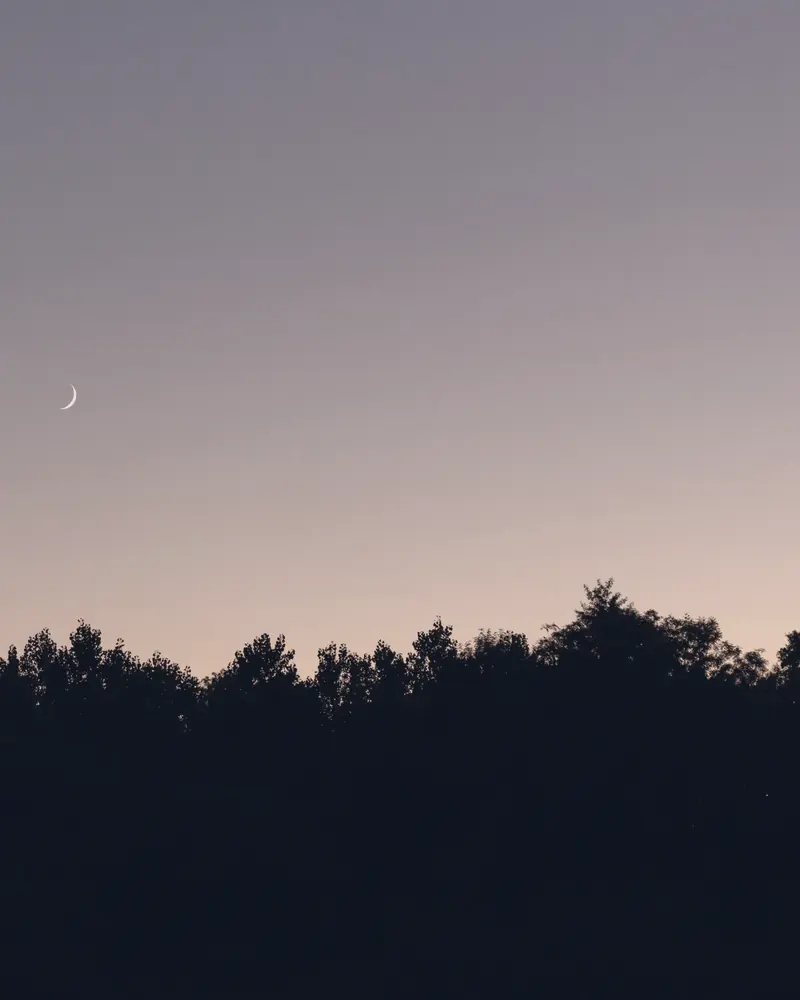
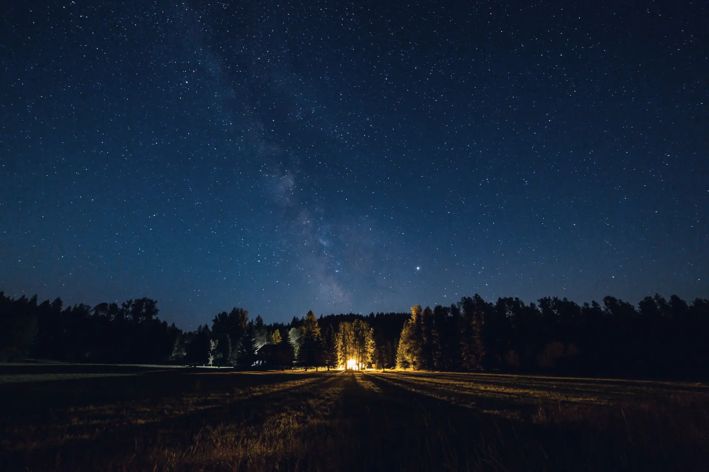
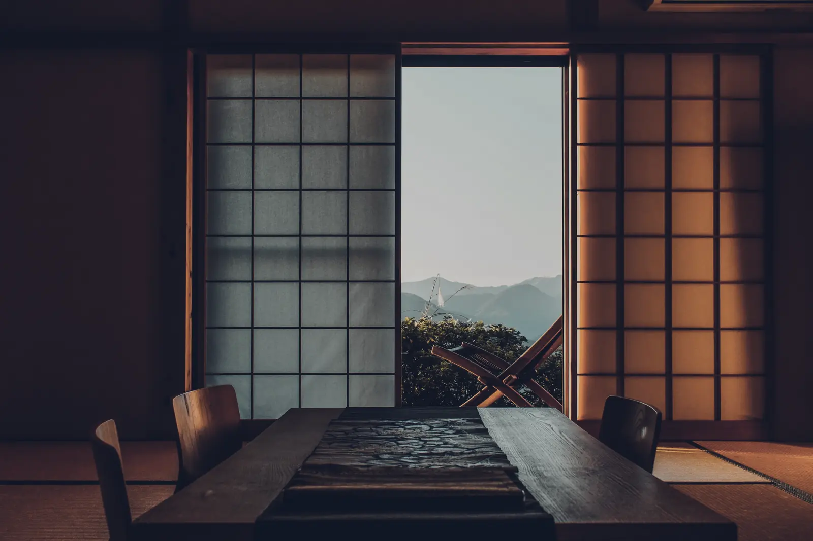
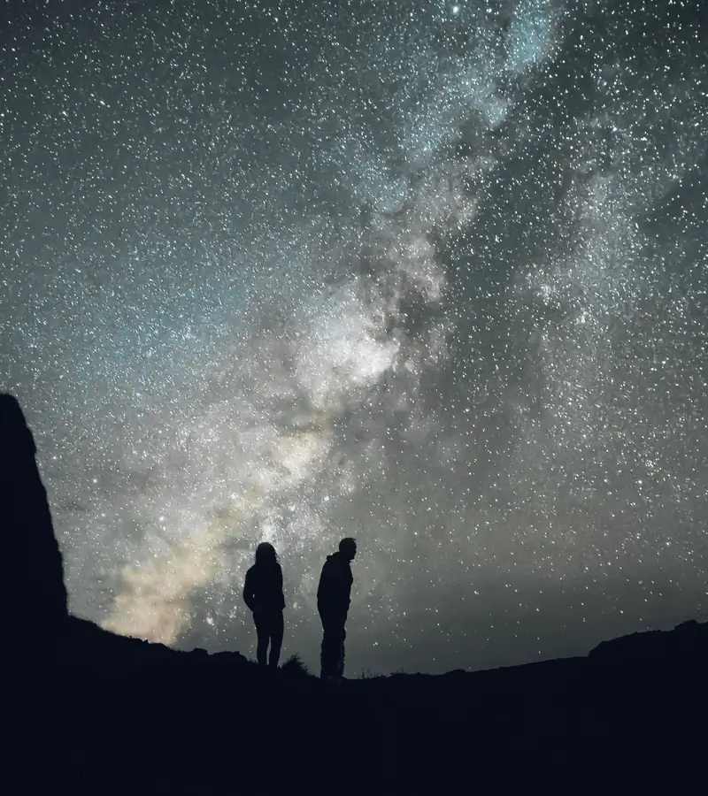
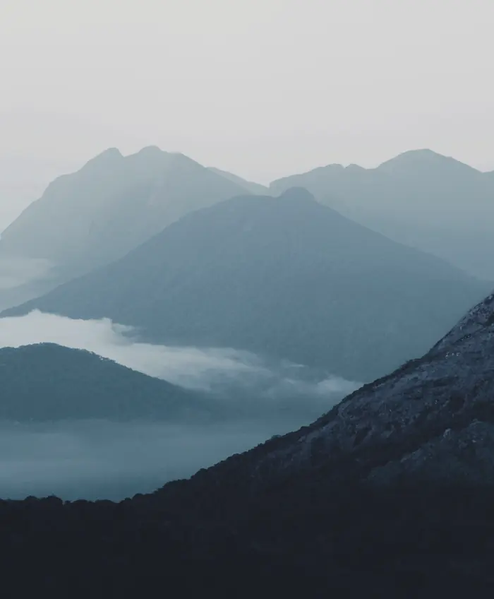

日が落ちるまで
着いたら、まずは縁側へ。山の端が藍に沈んでいくころ、細い月が出ていれば、それが夜のはじまりの合図です。

夜半よわ 星を見る貸切の宿見本・架空の宿です
空いている日を見る
一日一組 完全貸切

夜半は、一日にひと組だけを迎える小さな宿です。門を閉めたあとは、母屋も庭も、頭の上の空も、泊まる方だけのものになります。
灯りは、足もとを照らすぶんだけにしてあります。聞こえるのは風の音と、ときどき遠くで鳴く鳥くらいです。
くわしい場所は、ご予約のあとにお知らせしています。地図に印のない夜を、そのまま過ごしていただくためです。
着いたら、まずは縁側へ。山の端が藍に沈んでいくころ、細い月が出ていれば、それが夜のはじまりの合図です。


夕食のあと、庭の灯りをすべて落とします。目が暗さに慣れるまでの十五分ほどで、見える星の数が少しずつ増えていきます。
庭には寝ころべる長椅子と厚手の毛布を、湯殿には星の見える露天の湯船を用意しています。
晴れた夜のあとは、谷に霧がたまりやすくなります。朝食はお部屋へお運びしますので、急がずに、どうぞ。

同じ空でも、月の形で夜の顔が変わります。2026年12月を例にしました。
空の具合は日によります。そのまま泊まる夜は、灯りを落とした部屋で、星の本と温かいお茶をどうぞ。
| 日 | 月 | 火 | 水 | 木 | 金 | 土 |
|---|---|---|---|---|---|---|
| 1 | 2 | 3 | 4 | 5 | ||
| 6 | 7 | 8 | 9 | 10 | 11 | 12 |
| 13 | 14 | 15 | 16 | 17 | 18 | 19 |
| 20 | 21 | 22 | 23 | 24 | 25 | 26 |
| 27 | 28 | 29 | 30 | 31 |
月の日付は、国立天文台の暦（日本時間）によります。
空いている日は、予約ページでご覧いただけます。
空いている日を見る 予約ページ（外部のサイト）に移ります。お支払いは、カードでの事前決済です
ケーキ（5,500円）と季節の花（3,300円）をご用意できます。3日前までに、予約ページのご要望の欄にお書きください。
予約ページで空いている日と人数を選び、お名前と連絡先、カードの情報を入れると、3分ほどで終わります。確認のメールのあと、2日以内に道順と、送迎の時刻をうかがうご連絡をお送りします。
最寄り駅から送迎いたします（片道およそ30分、無料・予約制）。駐車場は2台分あります。
前日17時までのご連絡で、一度だけ無料で日を移せます（「取り消し」の行のとおりです）。当日に曇った夜も、夜半ごろに晴れ間の出ることがあります。起こしてほしい時刻を、お知らせください。